Releasenotes eBlinqx Hypotheekadvies – November 2025
📢 Onderstaande updates hebben wij in de maand november doorgevoerd:
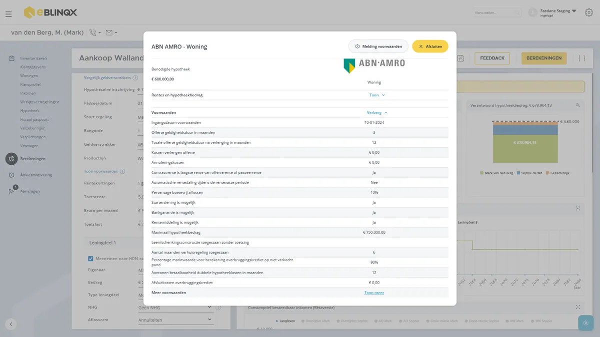
🆕 IT-28506: Full-page voorwaardenmodal bij jouw productlijn 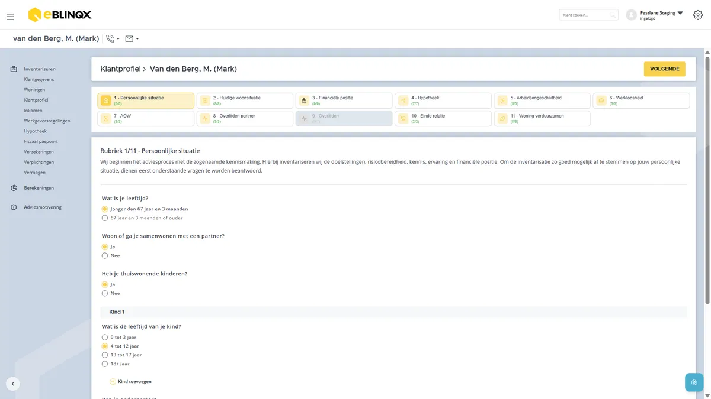
Onder de productlijn vind je nu de link Toon voorwaarden. Zodra je hierop klikt, opent een overzichtelijke full-page modal met het logo van de geldverstrekker, de productnaam en een heldere weergave van zowel het relevante rentetarief als de belangrijkste voorwaarden. Dankzij deze complete en rustige presentatie heb je alle essentiële informatie direct bij de hand. Met het kruisje rechtsboven sluit je de modal eenvoudig en ga je zonder onderbreking verder met je berekening of advies.
🆕 IT-28622: Klantprofiel telt nu je beantwoorde vragen per rubriek
In het klantprofiel zie je per rubriek in één oogopslag hoeveel vragen je al hebt ingevuld, bijvoorbeeld (3/5). Zo houd je moeiteloos overzicht en kun je doelgericht verder werken. De teller ververst zodra je op ‘Volgende’ klikt—helemaal in lijn met de validatie—waardoor je scherm stabiel en vlot blijft reageren. Dit helpt je sneller door je dossier heen, met precies de focus die je nodig hebt.
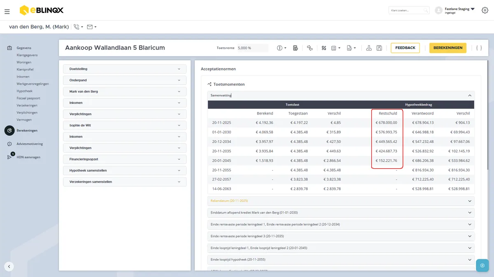
🐞 IT-28663: Consistente restschuld tussen acceptatienormen en toetsmomenten
De restschuld sluit nu weer volledig aan tussen de acceptatienormen en het verloop van restschuld en maandlasten. Hierdoor krijg je een duidelijker en consistent inzicht in de financieringsruimte, zodat je jouw klant nog nauwkeuriger kunt adviseren.
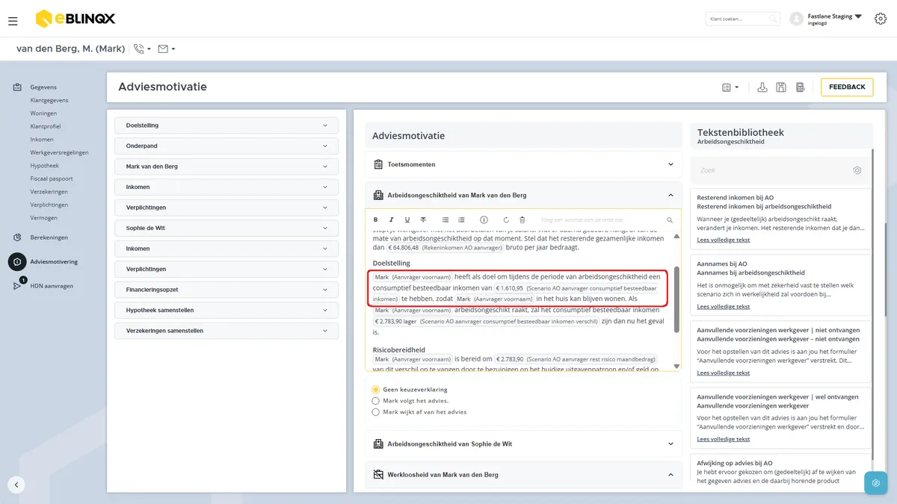
🐞 IT-28593: Heldere adviesmotivatie zonder dubbele tekstregels
De dubbele tekstregel in de adviesmotivatie voor de thema’s Arbeidsongeschiktheid en Werkloosheid (alleenstaande) is verwijderd uit de alinea ‘Doelstelling’. De tekst staat nu alleen nog op de juiste plek onder ‘Risicobereidheid’. Hierdoor lees je jouw adviesmotivatie voortaan overzichtelijker en zonder herhaling, wat het toelichten van je advies nog eenvoudiger maakt.
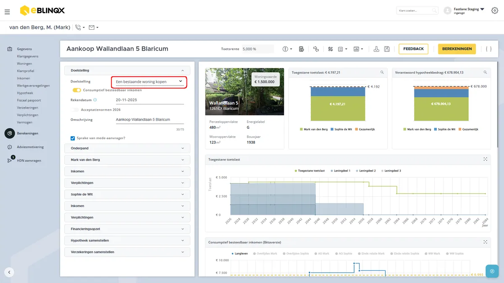
🐞 IT-28671: Altijd correcte onderpandgegevens bij gewijzigde doelstelling
Vanaf nu worden eerdere onderpandgegevens automatisch geleegd zodra je de doelstelling wijzigt naar een situatie met een andere onderpandscontext, zoals “Bestaande woning kopen”. Hierdoor werk je altijd met een schone lei en volledig relevante gegevens, zodat jouw berekening direct klopt en je zonder zorgen verder kunt in het adviesproces.
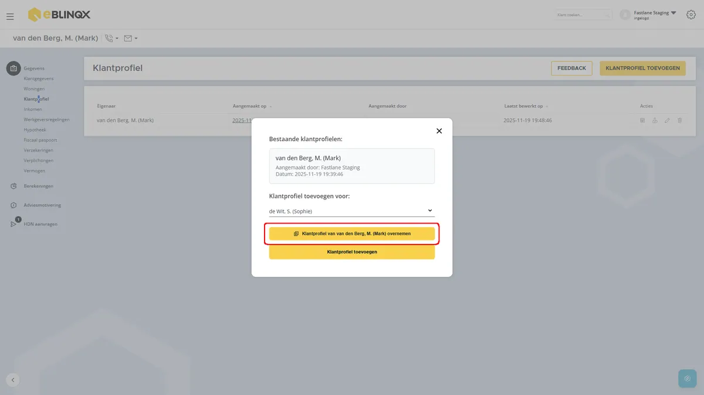
⚙️ IT-28574: Knop ‘klantprofiel overnemen’ verplaatst
De knop “klantprofiel overnemen” verschijnt nu direct in het modal zodra je een nieuw klantprofiel aanmaakt. Zo kun je het profiel op het meest logische en efficiënte moment overnemen, waardoor je sneller en met meer gemak verder kunt in je adviesproces.
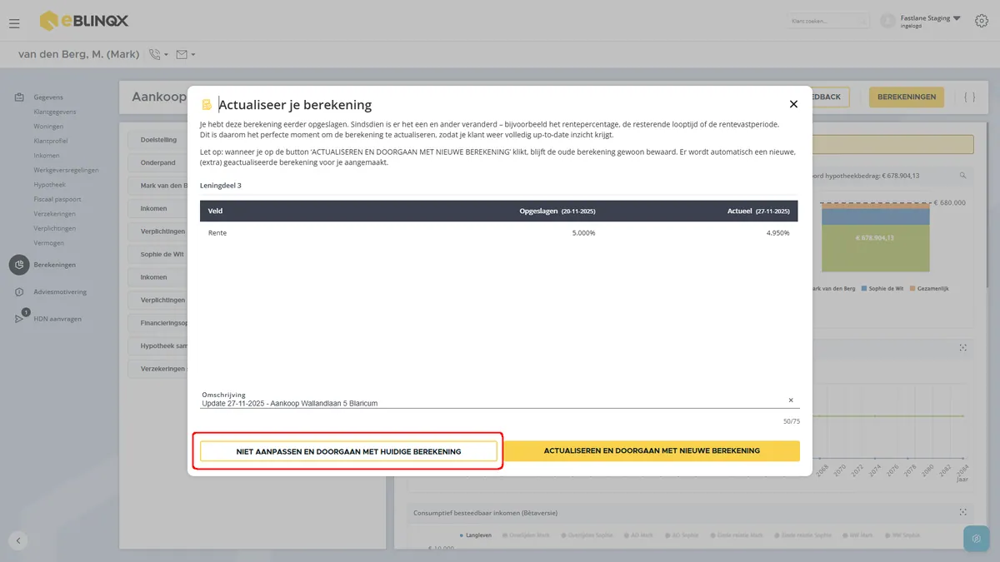
⚙️ IT-28588: Duidelijkere vervolgactie in de freeze-knop
Door de aangepaste knoptekst “NIET AANPASSEN EN DOORGAAN MET HUIDIGE BEREKENING” zie je in één oogopslag wat er gebeurt wanneer je verder gaat. Dit helpt je nóg zekerder en sneller door je berekeningen te navigeren.
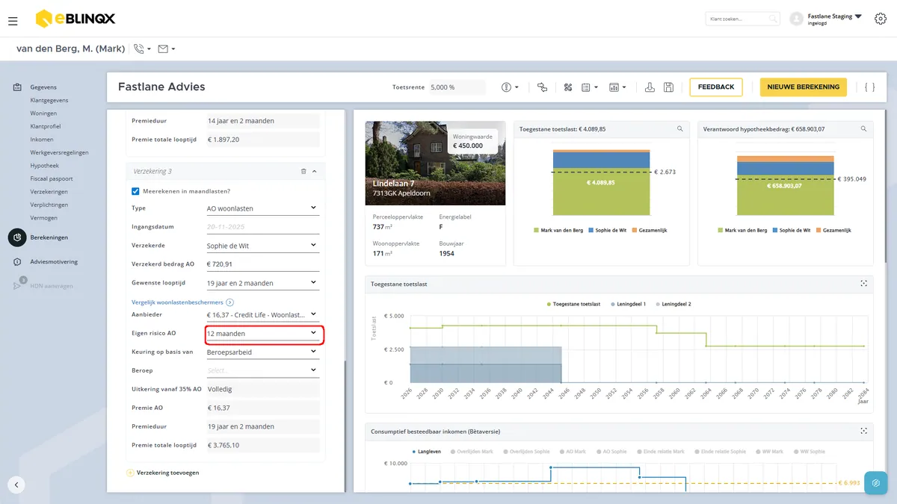
⚙️ IT-28366: Standaard eigen risicoperiode AO-woonlasten verkort naar 12 maanden
De default eigen risicoperiode bij de AO-woonlastenverzekering staat nu automatisch op 12 maanden. Dit sluit beter aan bij de werkelijke inkomensdaling na het eerste ziektejaar, waardoor je klanten direct een realistischer en consumentvriendelijker uitgangspunt krijgt. Jij hoeft hierdoor minder handmatig aan te passen, je advies sluit sneller aan op de praktijk en de output toont direct de juiste wachttijd.
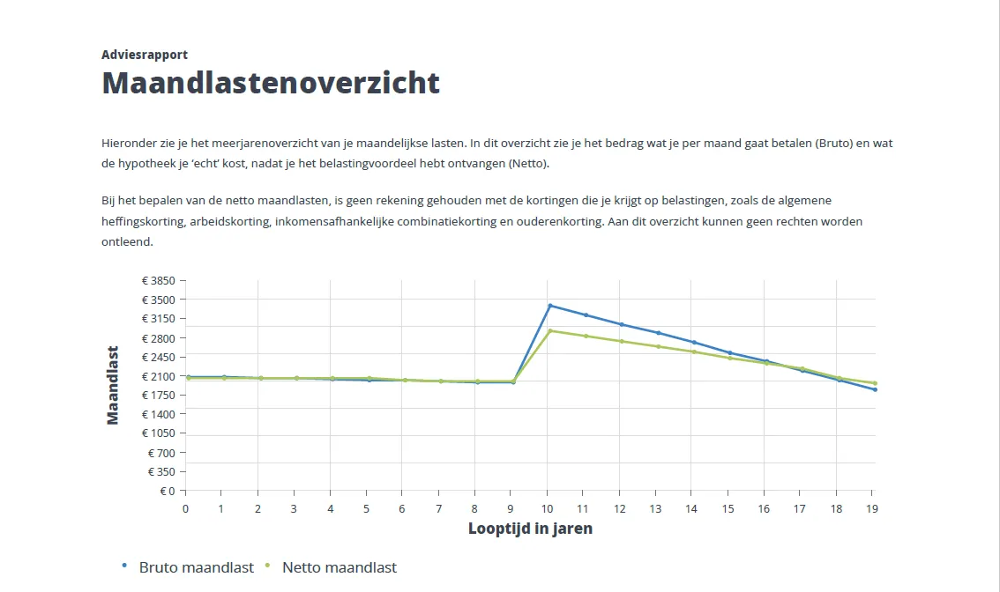
🐞 IT-28258: Grafiek bruto maandlasten toont variabele en hoge fictieve rente weer correct
De grafiek in het rapport toont nu altijd netjes de bruto maandlasten, ook wanneer je werkt met variabele rente in combinatie met hoge fictieve rentepercentages. Hierdoor blijft de visualisatie helder en overzichtelijk voor jouw klant. Daarnaast worden de verschillende rentevaste periodes weer correct weergegeven in het overzicht van de leningdelen, zodat meteen duidelijk is waarom de maandlasten veranderen. Dit maakt jouw uitleg eenvoudiger en zorgt voor een professioneler en consistenter rapport.
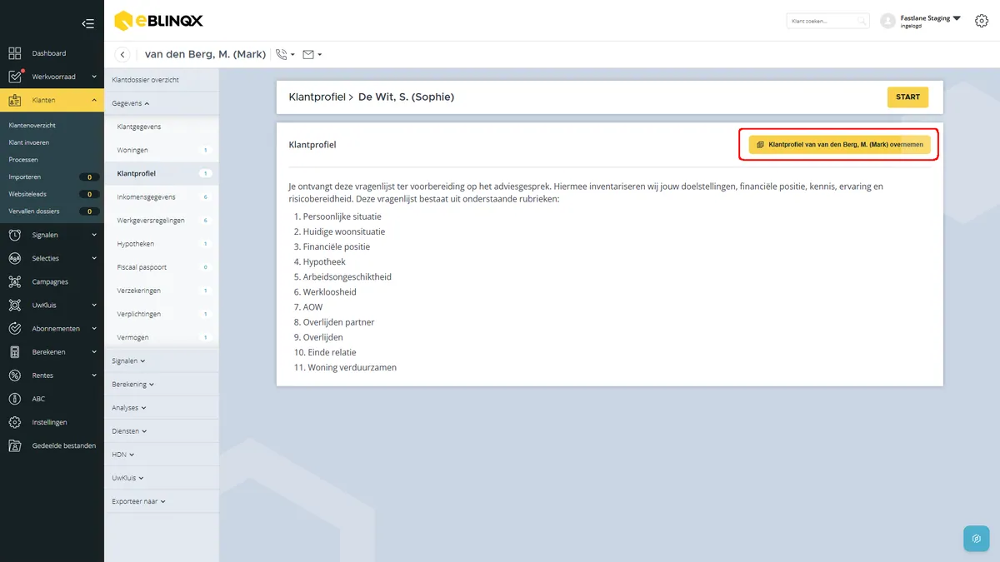
🆕 IT-24574: Klantprofiel eenvoudig kopiëren naar mede-aanvrager
Je kunt nu met één klik het klantprofiel van de aanvrager overnemen voor de mede-aanvrager. Zo hoef je niet langer alles dubbel in te vullen en pas je alleen de onderdelen aan waar de antwoorden verschillen. Dit bespaart je tijd, vermindert handmatig werk en zorgt voor een sneller én prettiger adviesproces.
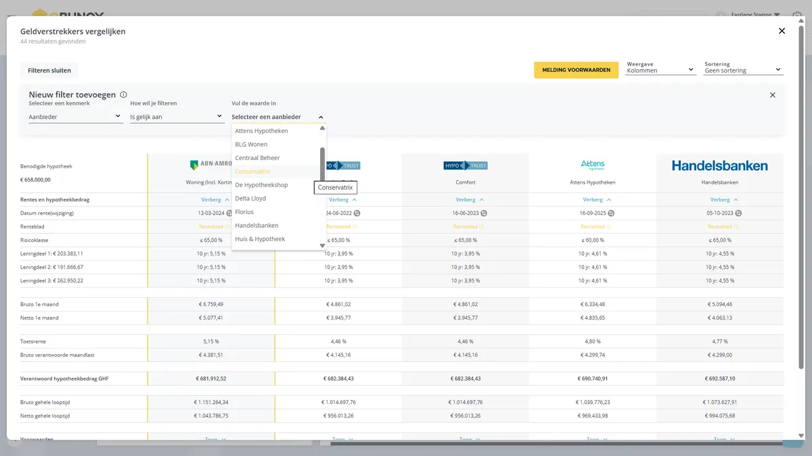
⚙️ IT-27447: Handige dropdown bij ‘Is gelijk aan’ in voorwaardenfilter
Je kunt voortaan veel makkelijker filteren op geldverstrekkers dankzij een duidelijke dropdown bij de optie ‘Is gelijk aan’. In plaats van zelf exact de juiste naam te moeten typen, kies je nu simpelweg de juiste waarde uit de lijst—zoals ‘Nationale-Nederlanden’ of ‘Venn Hypotheken’. Zo voorkom je foutjes, bespaar je tijd en filter je altijd meteen trefzeker op het juiste label.
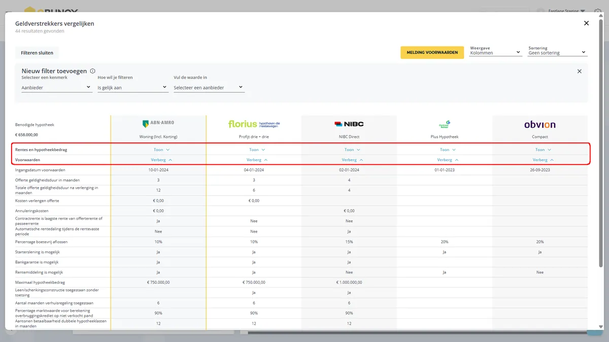
🆕 IT-28424: Nieuwe uitklapsectie ‘Rentes en hypotheekbedrag’ bij vergelijken
Je krijgt een extra, duidelijk uitklapbare sectie ‘Rentes en hypotheekbedrag’ in het overzicht Geldverstrekkers vergelijken. Standaard zie je hier alle belangrijke cijfers zoals rentepercentages, maandlasten en LTV-waarden, zodat je direct volledig inzicht hebt. Wil je je even volledig focussen op de voorwaarden, dan klap je deze cijfersectie eenvoudig dicht via een duidelijke knop die ook met je toetsenbord (Enter/Space) werkt. De voorwaarden blijven altijd goed zichtbaar en bruikbaar, zonder verspringende layout of onrustig scherm. Dit werkt uiteraard hetzelfde op desktop en mobiel en is toegankelijk ingericht, zodat jij soepel en gecontroleerd kunt schakelen tussen cijfers en voorwaarden tijdens je advies.
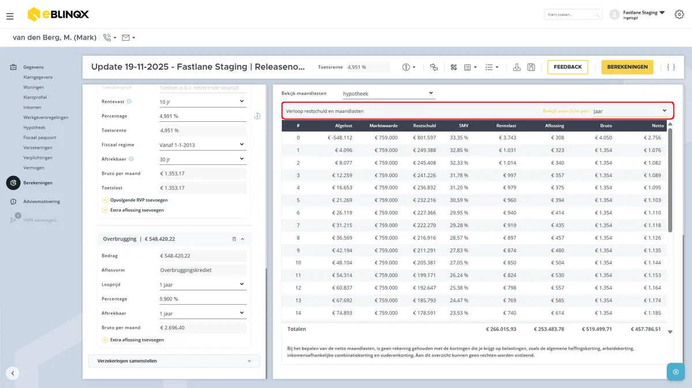
⚙️ IT-28294: Overzicht ‘Verloop restschuld en maandlasten’ met gefixeerde titelbalk
De titelbalk in het verloopoverzicht blijft nu altijd zichtbaar wanneer je door de tabel scrolt. Zo weet je op ieder moment precies naar welke kolommen je kijkt. Dit zorgt voor een veel rustiger overzicht en maakt het nog eenvoudiger om snel de juiste informatie te vinden.
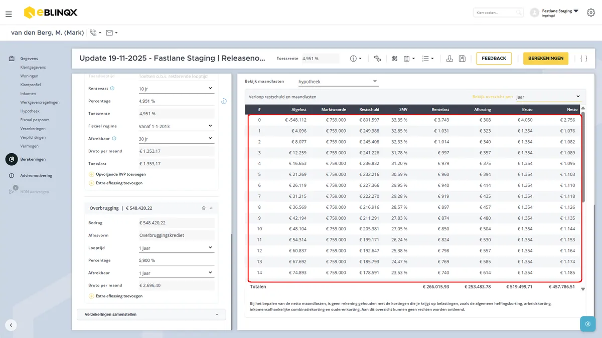
⚙️ IT-28294: Overzicht ‘Verloop restschuld en maandlasten’ met strak uitgelijnde kolommen
Alle kolommen in het verloopoverzicht zijn nu netjes en consistent uitgelijnd. Hierdoor ontstaat een veel rustiger, overzichtelijker en professioneler beeld, zodat jij sneller de juiste informatie kunt vinden en nog prettiger werkt met het verloop van restschuld en maandlasten.
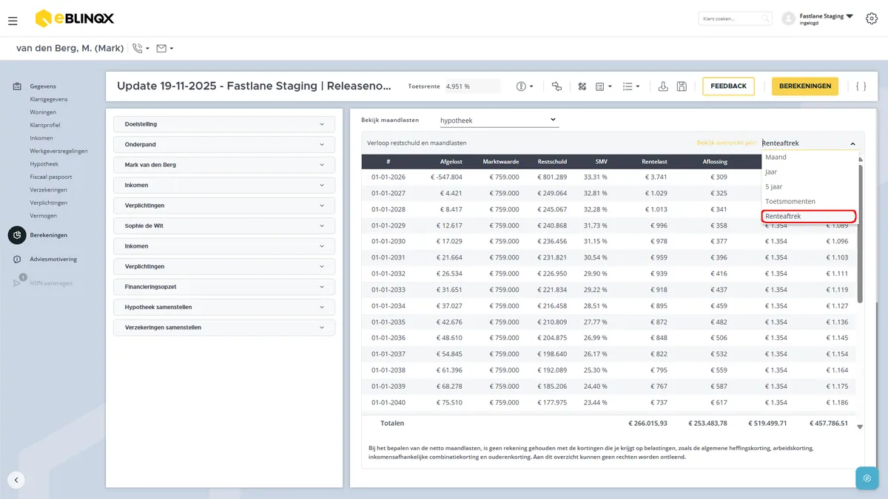
⚙️ IT-28294: Overzicht ‘Verloop restschuld en maandlasten’ uitgebreid met filter op ‘Renteaftrek’ 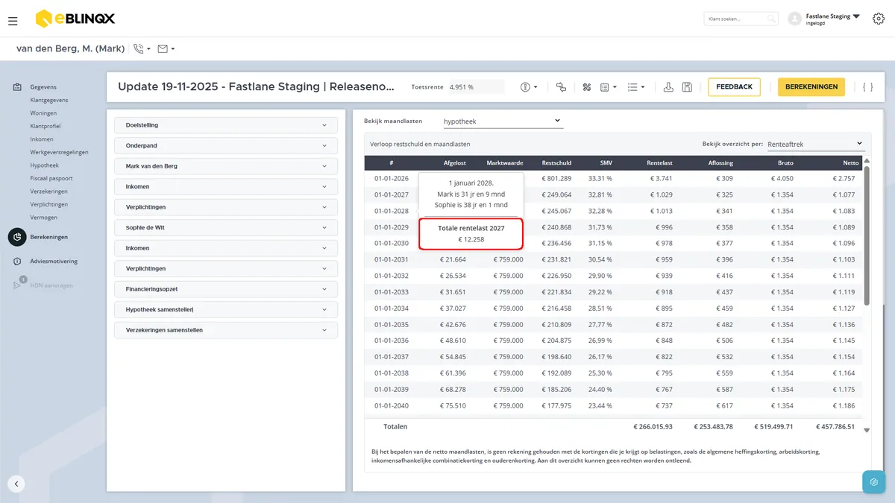
Je kunt het verloopoverzicht nu filteren op Renteaftrek, waardoor je in één oogopslag precies ziet hoeveel hypotheekrente jouw klant in een fiscaal jaar betaalt. Dit maakt het nóg eenvoudiger om helder inzicht te geven in de renteaftrek, zowel voor de voorlopige teruggaaf als voor de definitieve belastingaangifte. Dankzij deze gerichte weergave kun je jouw klant sneller en accurater ondersteunen.
⚙️ IT-28294: Overzicht ‘Verloop restschuld en maandlasten’ uitgebreid met totaaloptellingen per fiscaal jaar
Je ziet nu in het verloopoverzicht direct de totaal te betalen rente per fiscaal jaar. Dat maakt het voor jou nóg eenvoudiger om jouw klant te ondersteunen bij de voorlopige teruggaaf of bij de definitieve belastingaangifte. Dankzij deze uitbreiding heb je in één oogopslag volledig en helder inzicht, waardoor je sneller en nauwkeuriger kunt adviseren.
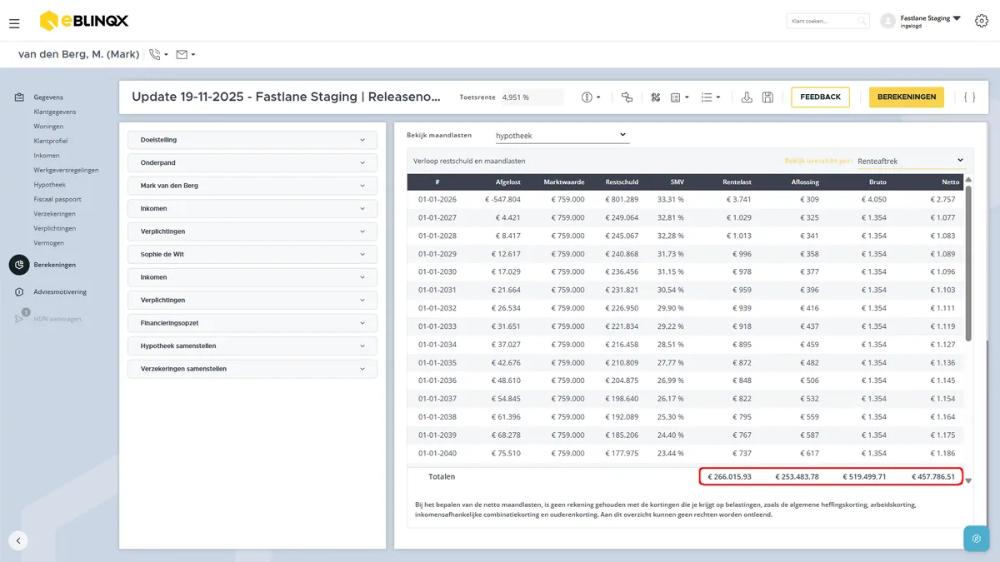
⚙️ IT-28294: Overzicht ‘Verloop restschuld en maandlasten’ verrijkt met totaaloptellingen
Je krijgt nu in één oogopslag volledig inzicht in de totaalsommen van alle relevante kolommen binnen het verloopoverzicht. Dankzij de nieuwe totaalrij wordt het interpreteren van het volledige verloop een stuk duidelijker en sneller. De oude regel ‘Totale investering’ is netjes verwijderd, omdat alle informatie nu overzichtelijk in de nieuwe totaaloptellingen is opgenomen. Zo werk je nog efficiënter met het verloop van restschuld en maandlasten.
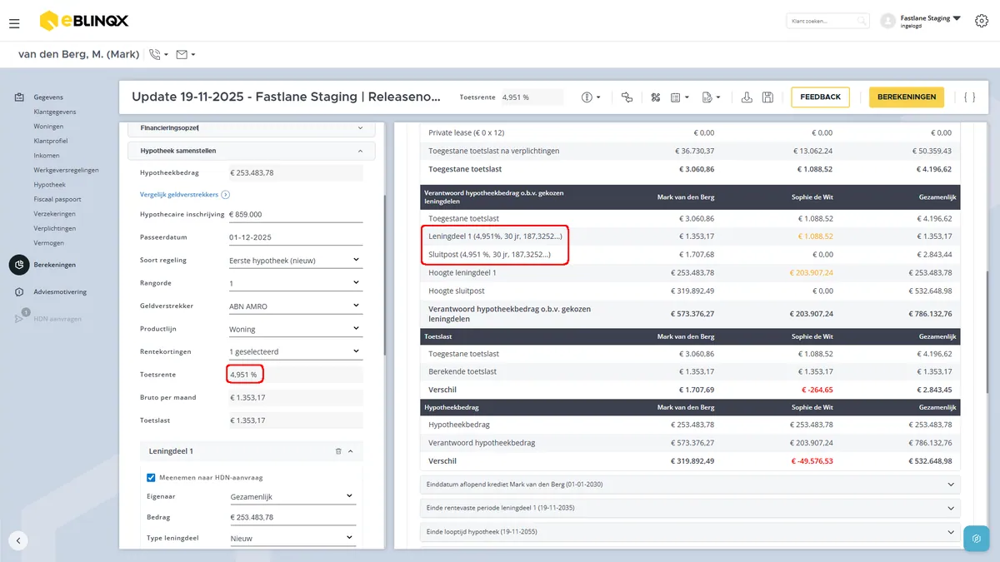
⚙️ IT-28394: Consistente afronding van hypotheekrente voor nauwkeurige berekeningen
Dankzij deze verbetering rekent jouw acceptatienormenmodule nu met dezelfde nauwkeurigheid als de rest van de applicatie: rentewaarden worden netjes tot drie decimalen meegenomen. Hierdoor sluiten de toetsrente, gewogen gemiddelde rente en maximale leensom altijd perfect op elkaar aan. Je voorkomt afrondingsverschillen en kunt met nog meer vertrouwen een nauwkeurige en stabiele leensomadvies geven.
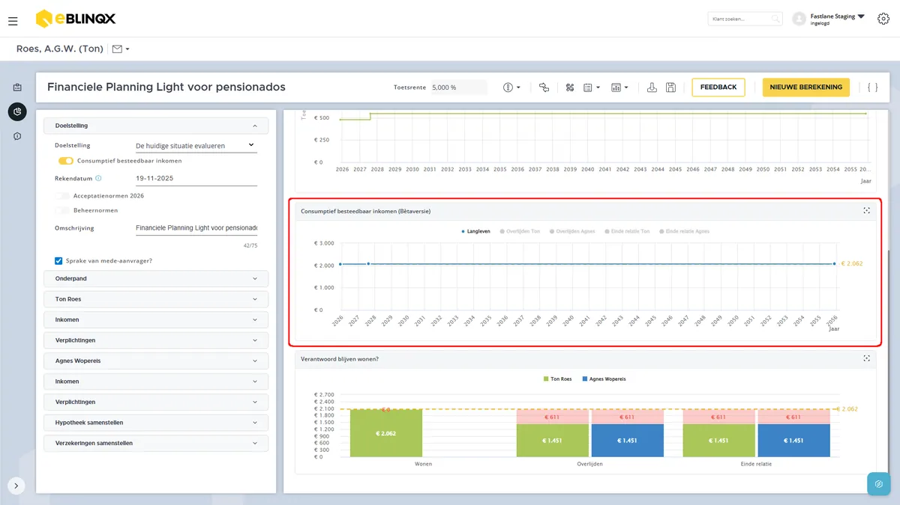
🐞 IT-28527: Consumptief besteedbaar inkomen voor pensionados
Indien de consument de AOW-gerechtigde leeftijd inmiddels heeft gepasseerd, rekende eBlinqx Hypotheekadvies toch nog het consumptief besteedbaar inkomen bij arbeidsongeschiktheid en werkloosheid uit, terwijl dit voor pensionado’s niet meer van toepassing is. Dit veroorzaakte een foutmelding bij de rekendatum. Dit is nu netjes opgelost, waardoor jij direct een kloppend en helder financieel overzicht krijgt en jouw advies soepel en zonder extra controles kunt afronden.
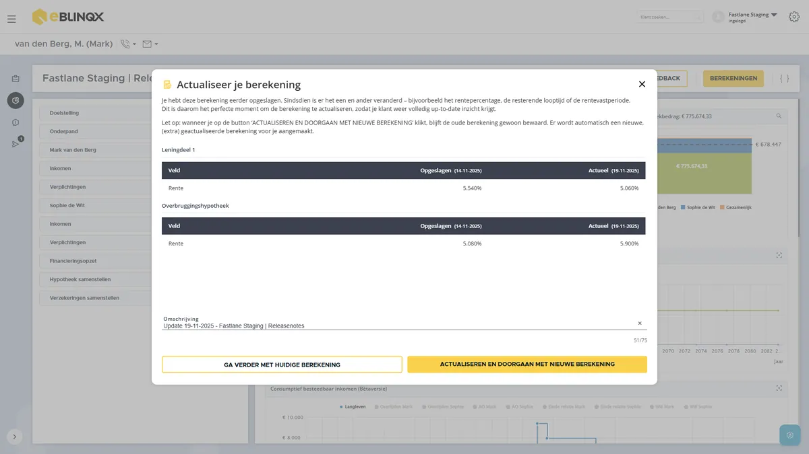
🆕 IT-27214: FREEZE | Looptijden en rentes automatisch vastgezet bij opslaan
Vanaf nu worden looptijden, tarieven en rentepercentages automatisch bevroren op het moment dat je een berekening opslaat. Hierdoor verandert een eerder opgeslagen advies niet meer ongemerkt als tarieven later worden aangepast. Je kunt een berekening na uren, dagen of weken weer openen en erop vertrouwen dat alle uitgangspunten gelijk zijn gebleven. Dit geeft je rust, duidelijkheid en een consistente onderbouwing richting jouw klant.
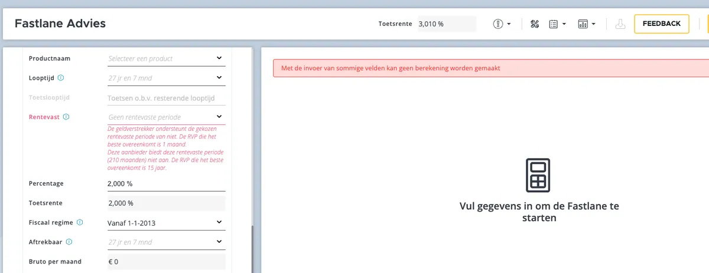
🐞 IT-28416: Onterechte foutmelding rentevaste periode opgelost
Je krijgt niet langer onterecht de melding dat de geldverstrekker de gekozen rentevaste periode niet ondersteunt. De gegevens uit jouw dossier worden nu steeds betrouwbaar gebruikt, zodat je zonder onderbreking verder kunt met je advies. Dit geeft je meer zekerheid tijdens het aanvragen en scheelt onnodig uitzoekwerk.
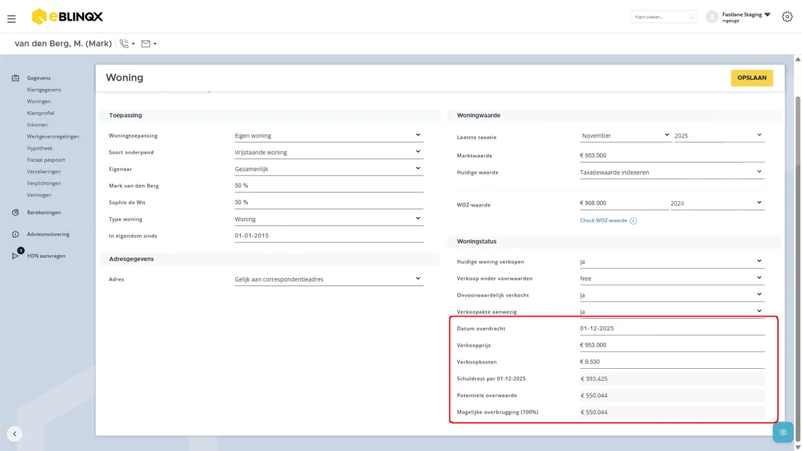
🐞 IT-28406: Nauwkeurigere berekening van mogelijke overbrugging
Dankzij een extra controle sluit de mogelijke overbrugging nu altijd perfect aan op de verwachte overwaarde bij een onvoorwaardelijk verkochte woning. Je voorkomt hiermee dat de overbrugging hoger uitvalt dan de potentiële overwaarde. Zo krijg je een helder en betrouwbaar inzicht zonder risico op overschatting. Je kunt jouw advies daardoor met nog meer vertrouwen onderbouwen. Hierdoor blijft jouw berekening altijd realistisch en prettig in gebruik.

🐞 IT-28422: Eenduidige weergave Nationale Nederlanden in vergelijkingsoverzicht
Nationale Nederlanden wordt nu nog maar één keer getoond in het overzicht Geldverstrekkers vergelijken. Afhankelijk van de gekozen doelstelling wordt automatisch het juiste tarief gebruikt voor bestaande bouw of nieuwbouw. Dit maakt het vergelijken van geldverstrekkers overzichtelijker en voorkomt verwarring. Zo kun je sneller en met meer vertrouwen de beste keuze voor je klant maken.
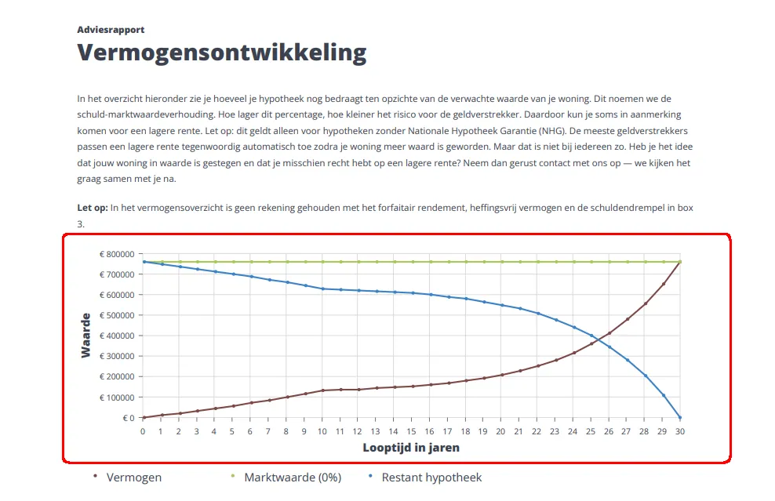
🆕 IT-28283: Vernieuwde en uitgebreidere vermogensgrafiek
Je ziet voortaan een extra lijn in de grafiek ‘Vermogensontwikkeling’, waardoor je in één oogopslag het verschil tussen marktwaarde en resterende hypotheek kunt volgen. De aangepaste kleuren maken de grafiek duidelijker en sluiten perfect aan bij je dagelijkse werkzaamheden. In het adviesrapport vind je nu dezelfde moderne en frisse grafieken als in de applicatie, zodat alles mooi op elkaar aansluit. Dankzij de toevoeging van de nieuwe lijn presenteer je jouw klant een nog completer en inzichtelijker beeld. Zo wordt jouw advies nog sterker en overzichtelijker.
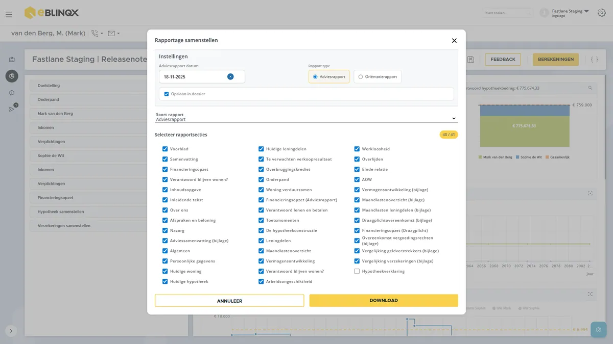
⚙️ IT-23389: Sneller rapporten downloaden
De PDF-rapportages laden nu merkbaar sneller doordat alleen de informatie wordt meegenomen die echt nodig is voor de geselecteerde pagina’s. Hierdoor download je rapporten vlotter en werk je prettiger. Dit helpt je om sneller te schakelen tijdens je adviesgesprekken en meer tijd te besteden aan je klant.
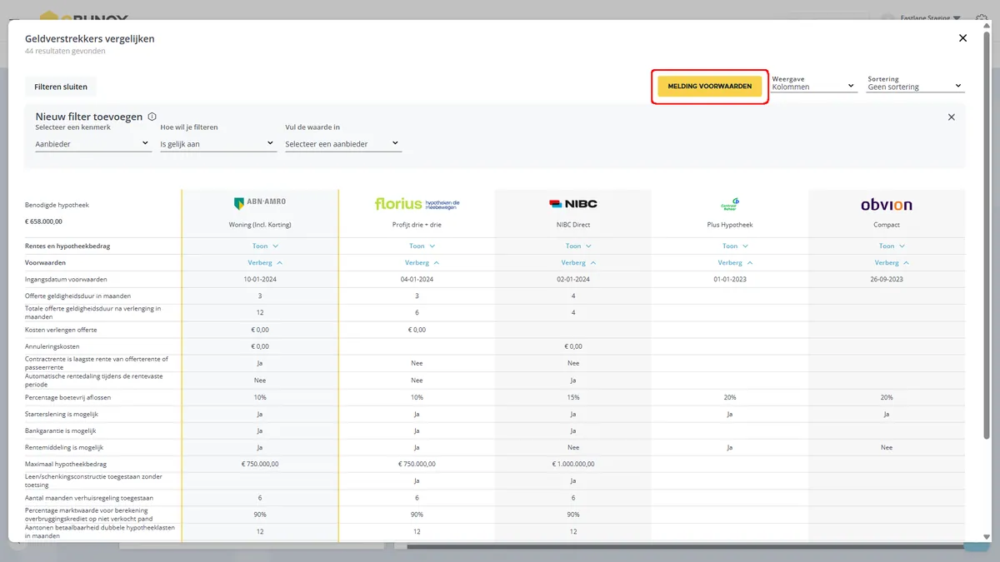
⚙️ IT-28426: Duidelijkere knop voor melden van voorwaarden
De knop “Feedback” is bij Geldverstrekkers vergelijken vervangen door “Melding voorwaarden”, waardoor meteen duidelijk is waarvoor deze bedoeld is. Jouw melding over mogelijke verbeteringen in voorwaarden wordt nu automatisch mét alle relevante context doorgestuurd naar onze dataleverancier Findata. Hierdoor kunnen zij sneller beoordelen wat er moet worden aangepast. Dit maakt melden eenvoudiger voor jou én versnelt het doorvoeren van verbeteringen.
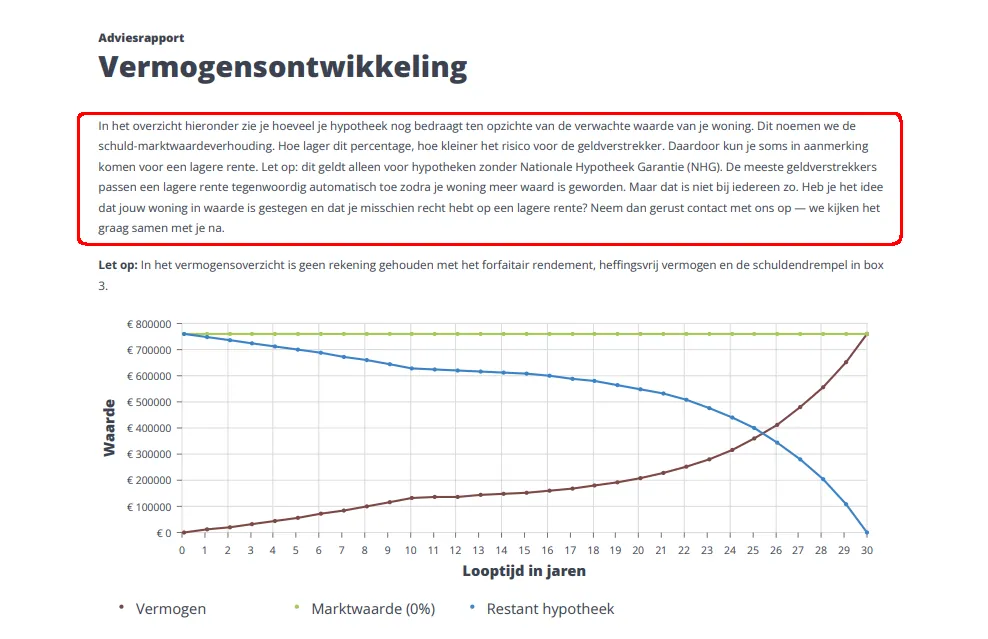
⚙️ IT-28434: Vernieuwde toelichting bij Vermogensontwikkeling
De pagina Vermogensontwikkeling in het adviesrapport bevat nu een volledig actuele en klantvriendelijke uitleg. Hierdoor krijgt je klant duidelijker inzicht in hoe de verhouding tussen hypotheek en woningwaarde werkt. De vernieuwde tekst sluit beter aan op de huidige marktpraktijk rondom renteaanpassingen. Dit helpt je om verwachtingen helder te managen en advies nog makkelijker toe te lichten. Zo werk je met een rapport dat volledig up-to-date is.
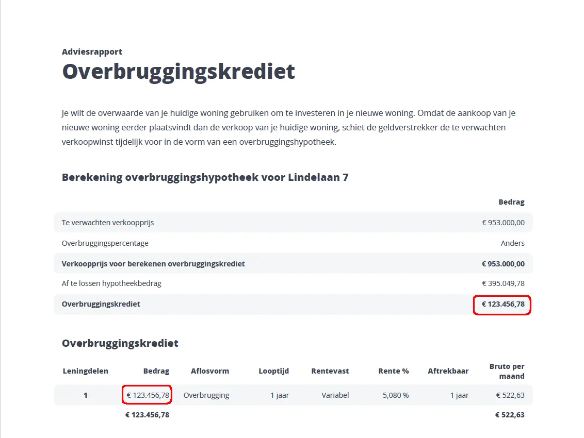
🐞 IT-28392: Correcte weergave handmatig overbruggingsbedrag
Het handmatig ingevoerde overbruggingsbedrag wordt nu altijd exact overgenomen in het adviesrapport. Hierdoor sluit de rapportage volledig aan op wat je in de Adviesmotivering hebt vastgelegd. Dit voorkomt verwarring en zorgt voor een consistente en betrouwbare toelichting richting je klant. Je kunt nu met vertrouwen een afwijkend bedrag gebruiken wanneer de situatie daarom vraagt.
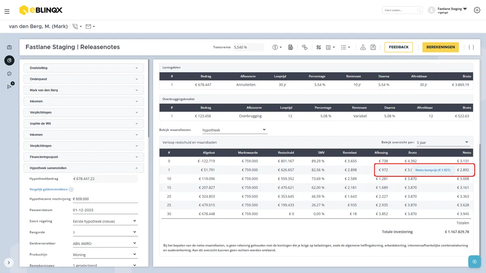
🆕 IT-28268: Tooltip Netto Kostprijs en dynamische kolomweergave
De tabel geeft je nu extra context dankzij een duidelijke tooltip bij de kolom ‘Netto’. Zodra je er met de muis overheen gaat, verschijnt automatisch de juiste Netto kostprijs (Netto per maand minus aflossing). Daarnaast zie je de kolom ‘Opgebouwd’ alleen wanneer deze echt waarde toevoegt. Zo blijft jouw overzicht compact en volledig relevant voor jouw klant. De weergave is zowel op je scherm als in het rapport volledig.
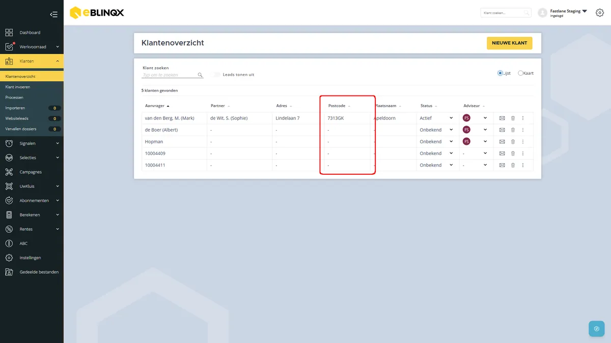
🆕 IT-28393: Postcode toegevoegd aan klantenoverzicht
Je ziet nu direct de postcode van jouw klant in het klantenoverzicht, precies tussen Adres en Plaatsnaam. Hierdoor kun je sneller werken bij bijvoorbeeld taxaties of het opstellen van nota’s. De kolombreedtes zijn geoptimaliseerd zodat alles helder en overzichtelijk blijft. Ook kun je eenvoudig op postcode sorteren voor nog meer gemak. Dit alles zonder impact op de snelheid van het overzicht.
🐞 IT-28430: Gecorrigeerde financieringslastnormen 2026 toegepast
Je hypotheekberekeningen maken nu gebruik van de door het Nibud gecorrigeerde financieringslastnormen 2026. Hierdoor worden woningen zonder energielabel weer op de juiste manier beoordeeld. Je kunt dus rekenen op volledig kloppende resultaten in al je dossiers. Zowel met als zonder energielabel zijn de uitkomsten consistent gevalideerd. Zo werk je altijd met de juiste en meest actuele normen.
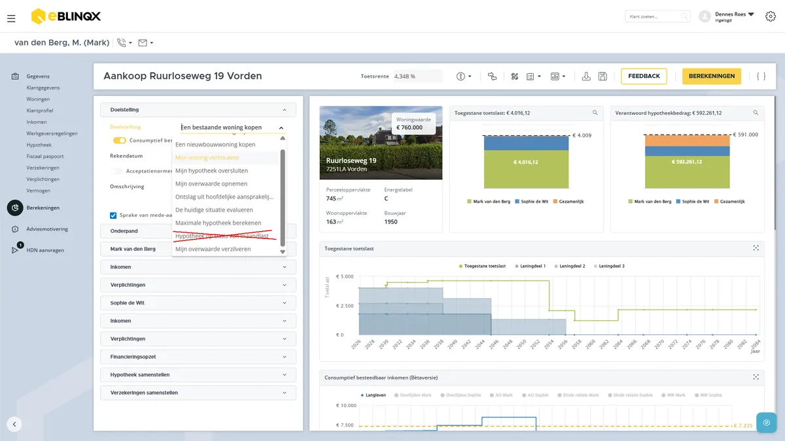
🐞 IT-28260: Doelstelling ‘Hypotheek op basis van maandlast’ tijdelijk uitgeschakeld
Bij het schakelen naar ‘Hypotheek op basis van maandlast’ werd alleen het benodigd inkomen van de aanvrager aangepast, waardoor er voor koppels een onjuiste presentatie werd verkregen. Door de doelstelling tijdelijk uit te zetten, voorkom je foutieve en verwarrende resultaten. De functionaliteit wordt later weer geactiveerd zodra de berekening volledig is verbeterd.
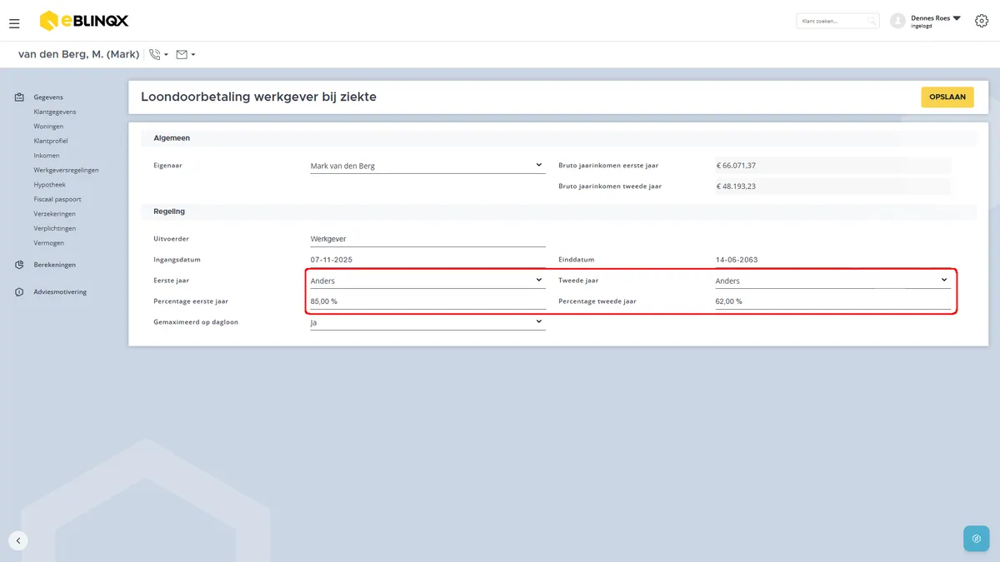
🆕 IT-20230: Automatisch WULBZ bij loondienst + ‘Anders’-optie
De WULBZ-regeling wordt nu automatisch toegevoegd zodra je een inkomen uit loondienst vastlegt. Hierdoor hoef je niets meer handmatig aan te maken en blijft geen veld onbedoeld leeg. Bij ‘Eerste jaar’ en ‘Tweede jaar’ is de nieuwe keuze ‘Anders’ beschikbaar voor maatwerk. Kies je ‘Anders’, dan kun je zelf een percentage invullen tot op twee decimalen (bijv. 83,75%). Resultaat: sneller werken, hogere datakwaliteit en meer consistentie tussen dossiers.
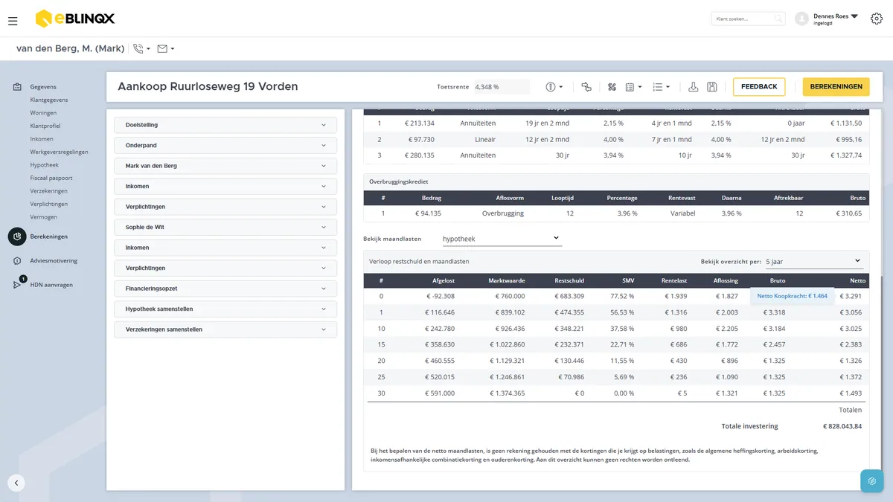
🆕 IT-28268: Netto kostprijs van de hypotheek
De tabel ‘Verloop restschuld en maandlasten’ is uitgebreid met een handige tooltip bij de kolom ‘Netto’. Wanneer u met de muis over deze kolom beweegt, ziet u direct de Netto Koopkracht (Netto KP) — oftewel de netto kostprijs van de hypotheek: het verschil tussen de netto maandlast en de aflossing of inleg. Zo kunt u de klant duidelijk laten zien wat het wonen werkelijk kost en welk deel wordt afgelost of gespaard. Let op: de term Netto Koopkracht wordt binnenkort vervangen door Netto kostprijs (netto minus aflossing) voor een nog duidelijkere communicatie. Daarnaast wordt de kolom ‘Opgebouwd’ alleen getoond wanneer er daadwerkelijk een waarde aanwezig is, waardoor de tabel overzichtelijk blijft.
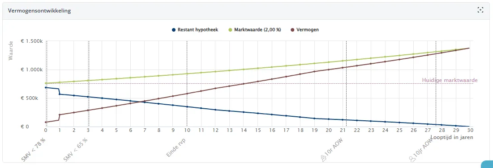
🆕 IT-28283: Vernieuwde grafieken met extra inzicht in vermogensontwikkeling
De grafiek ‘Vermogensontwikkeling’ toont nu een extra bruine lijn die in één oogopslag laat zien hoe het vermogen zich ontwikkelt: de woningwaarde minus de resterende hypotheek.
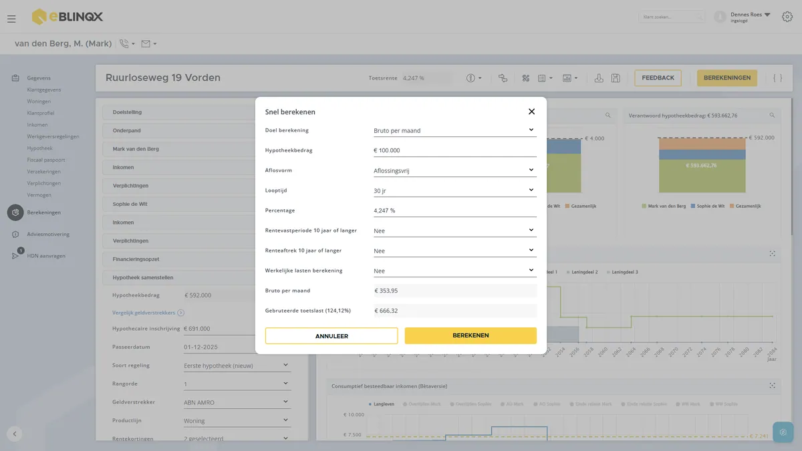
IT-28304 – Uitbreiding ‘Snel berekenen’ met doelberekening ‘Bruto per maand’
De tooling ‘Snel berekenen’ is uitgebreid met nieuwe mogelijkheden voor de doelberekening Bruto per maand. Hiermee krijgt de adviseur meer flexibiliteit en nauwkeurigheid bij het berekenen van de toets- en maandlasten. Wat is nieuw:
✅ Drie nieuwe keuzemogelijkheden: Rentevastperiode 10 jaar of langer, Renteaftrekperiode 10 jaar of langer, Werkelijke lastenberekening (alleen bij aflosvorm Aflossingsvrij)
✅ Dynamische weergave van de toetslast: het veld toont automatisch Reguliere toetslast of Gebruteerde toetslast (xx,xx%) afhankelijk van de gekozen renteaftrekperiode.
✅ Verbeterde berekeningslogica: de toetslast wordt nu correct berekend, ook bij aflosvorm Aflossingsvrij en gebruik van Werkelijke lastenberekening.
Deze uitbreiding zorgt voor een betere aansluiting op de praktijk en nauwkeurigere berekeningen in jouw adviestraject.
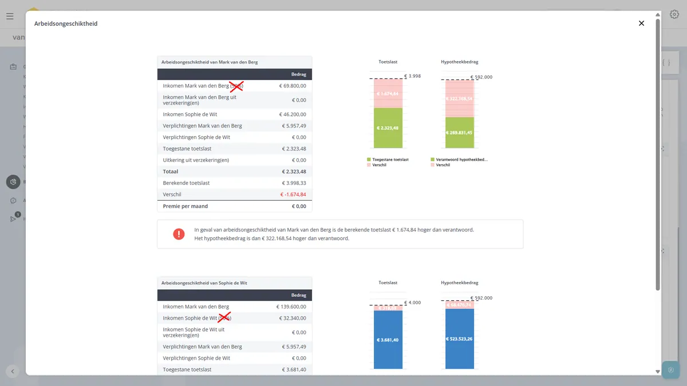
🔔 IT-28361 – Duidelijker weergave in ‘Verantwoord Blijven Wonen’
De module Verantwoord Blijven Wonen is nu nog helderder en consistenter in gebruik. In de verdiepende schermen én bijbehorende output zijn de onnodige %-tekens achter waarden verwijderd. Deze tekens hadden geen functionele betekenis en konden verwarring oproepen — daarom tonen we nu alleen de relevante cijfers, zonder overbodige symbolen. Alle berekeningen blijven uiteraard exact hetzelfde. Het resultaat: een strakker schermontwerp, duidelijkere rapportages en een professionelere presentatie richting je klant.
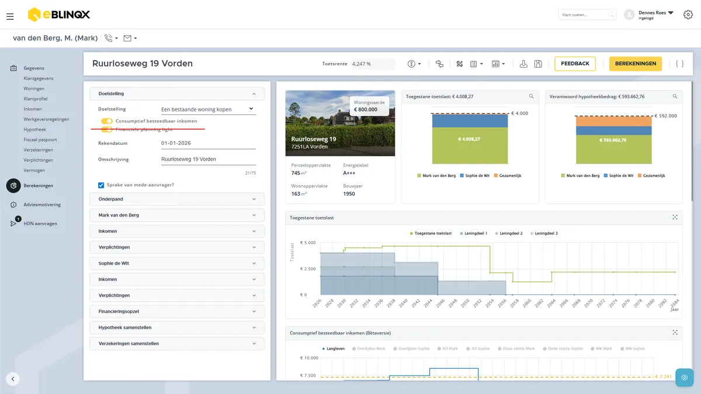
🔔 IT-27247 – Verwijderen toggle ‘Financiële Planning Light’ bij doelstelling
Om het gebruik van eBlinqx Hypotheekadvies eenvoudiger en duidelijker te maken, is de toggle ‘Financiële Planning Light’ (FPL) bij de doelstelling verwijderd. Tot nu toe kon je als adviseur handmatig aangeven of FPL zichtbaar moest zijn bij het samenstellen van een doelstelling. Dat zorgde soms voor onduidelijkheid. Vanaf nu wordt FPL automatisch geactiveerd op basis van de algemene instellingen in het CRM-systeem. Kortom: minder klikken, meer duidelijkheid.
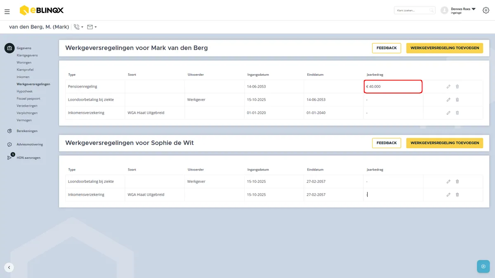
🔔 IT-24634 – Uitbreiding samenvattend overzicht werkgeversregeling met kolom ‘Jaarbedrag’
Het samenvattend overzicht van de werkgeversregeling in eBlinqx Hypotheekadvies is uitgebreid met een nieuwe kolom: ‘Jaarbedrag’. Wat is er nieuw?: In de nieuwe kolom ‘Jaarbedrag’ wordt nu het te bereiken ouderdomspensioen automatisch weergegeven bij de pensioenregeling. Met deze uitbreiding heb je als adviseur nog sneller en duidelijker inzicht in de financiële regelingen van jouw klant.
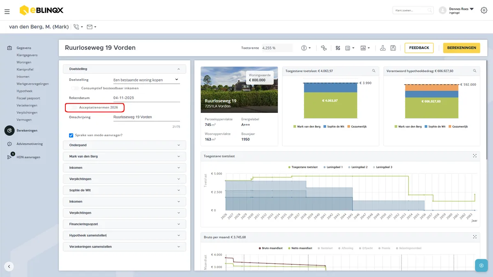
🔔 IT-28336 & IT28338 – Hypotheeknormen 2026 (Nibud) nu beschikbaar in eBlinqx Hypotheekadvies!
Goed nieuws! eBlinqx Hypotheekadvies Hypotheekadvies rekent nu automatisch met de nieuwe hypotheeknormen 2026 van het Nibud. Zo ben jij als adviseur volledig voorbereid op de regels voor verantwoord lenen in 2026 – ruim vóórdat het nieuwe jaar begint.
De officiële financieringslasttabellen en parameters zijn volledig verwerkt. Denk aan:
🔸 Aangepaste energielabel-opslagen (lagere extra leenruimte bij zeer zuinige woningen)
🔸 Bijgewerkte bedragen voor verduurzamingsmaatregelen
🔸 Actuele CPB-loonraming 2026 (+4,1%)
🔸 Correcte jaartallen en toelichtingen in adviesteksten en tooltips
🔸 De financieringslastpercentages
👉 eBlinqx Hypotheekadvies schakelt automatisch over naar de normen van 2026 zodra de rekendatum in 2026 ligt, of wanneer je kiest voor ‘Acceptatienormen 2026’ bij de doelstelling. Zo kun je nu al vooruit rekenen en adviseren met de nieuwste normen!
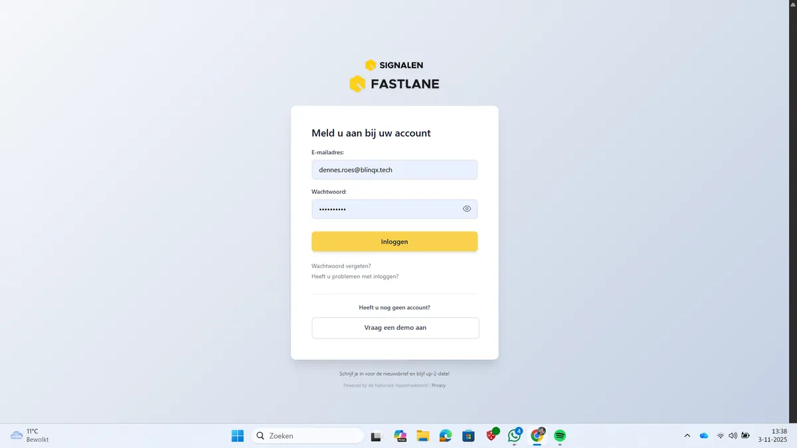
💡 IT-28321: Vernieuwd login-scherm — frisser, moderner en volledig in lijn met de nieuwe huisstijl
eBlinqx Hypotheekadvies heeft een stijlvolle upgrade gekregen! Het login-scherm is volledig vernieuwd en sluit nu perfect aan op de nieuwste huisstijl en multi-logo-ondersteuning. De nieuwe vormgeving zorgt voor een moderne, professionele uitstraling en een prettige eerste indruk bij elke gebruiker. Wat is er verbeterd:
-
Volledig herontworpen layout die meerdere logo’s netjes ondersteunt.
-
Frissere vormgeving met verbeterde balans in kleur, ruimte en typografie.
-
Een consistent design dat aansluit bij de rest van het eBlinqx Hypotheekadvies-platform.
-
Geoptimaliseerd voor zowel desktop als mobiel, met snellere laadtijden.
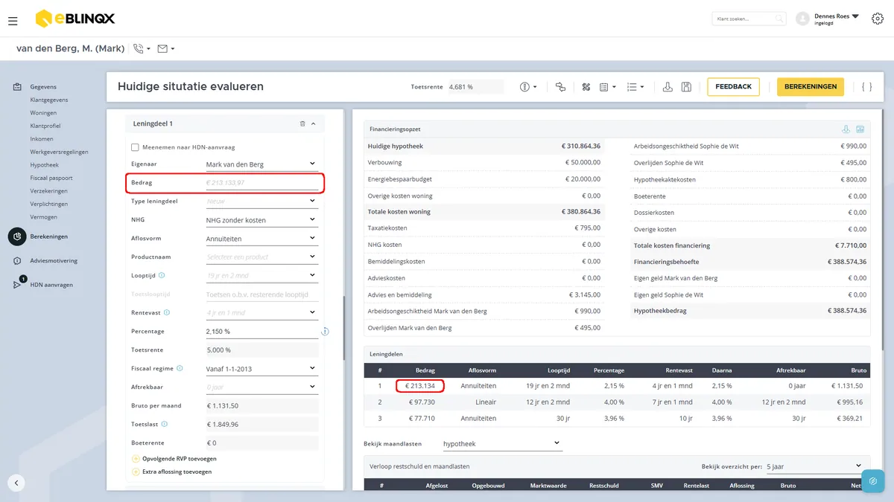
💡 IT-28310: Stabiliteitsfix bij ‘Resterende schuld schatten’ — soepel rekenen zonder foutmeldingen
We hebben een fout opgelost die in uitzonderlijke gevallen een TypeError veroorzaakte tijdens het schatten van de resterende schuld in de adviesflow. Het probleem trad op wanneer een tussenwaarde ontbrak en toch werd afgerond. Dat is nu verholpen. Wat is er verbeterd
-
Null-safe berekening & afronding: ontbrekende (null) waarden worden eerst gevalideerd of netjes geneutraliseerd voordat er gerekend en afgerond wordt.
-
Robuuste inputcontrole: extra checks voorkomen dat onvolledige gegevens een foutmelding geven.
-
Heldere fallback-logica: waar nodig wordt een veilige standaard toegepast, zodat de berekening doorloopt.
-
Betere monitoring: extra logging helpt ons vroegtijdig vergelijkbare situaties te signaleren.
De stap ‘Resterende schuld schatten’ werkt weer vloeiend en betrouwbaar, ook in dossiers met onvolledige of afwijkende input. Geen onverwachte onderbrekingen meer — je kunt je advies gewoon afronden.
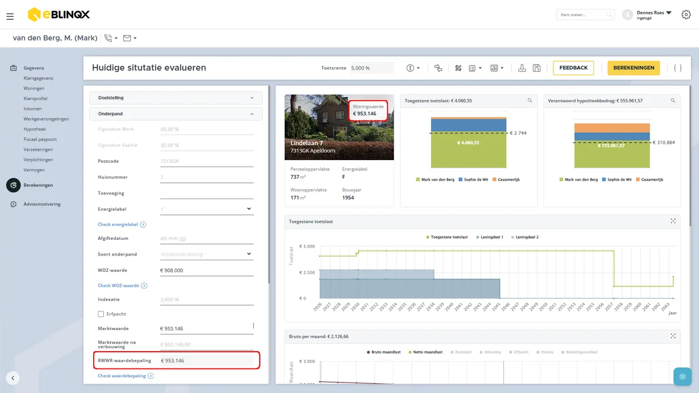
💡 IT-28289: Woningwaarde-API geüpdatet naar Laravel 12 – sneller, stabieler en toekomstbestendig
eBlinqx Hypotheekadvies draait nu op de nieuwste technologie! De woningwaarde-API is volledig overgezet naar Laravel 12, waardoor de prestaties, stabiliteit en veiligheid van de koppeling met woningwaardedata verder zijn verbeterd. Wat is er verbeterd:
-
Snellere verwerking van woningwaardes en taxatiegegevens.
-
Betere foutafhandeling en stabielere API-connecties.
-
Klaar voor toekomstige uitbreidingen binnen het Laravel-ecosysteem.
De overgang merk je direct in de achtergrond: woningwaardes worden voortaan nóg sneller en betrouwbaarder opgehaald. Jij kunt daardoor rekenen op actuele, consistente gegevens in je advies — zonder haperingen of vertraging.
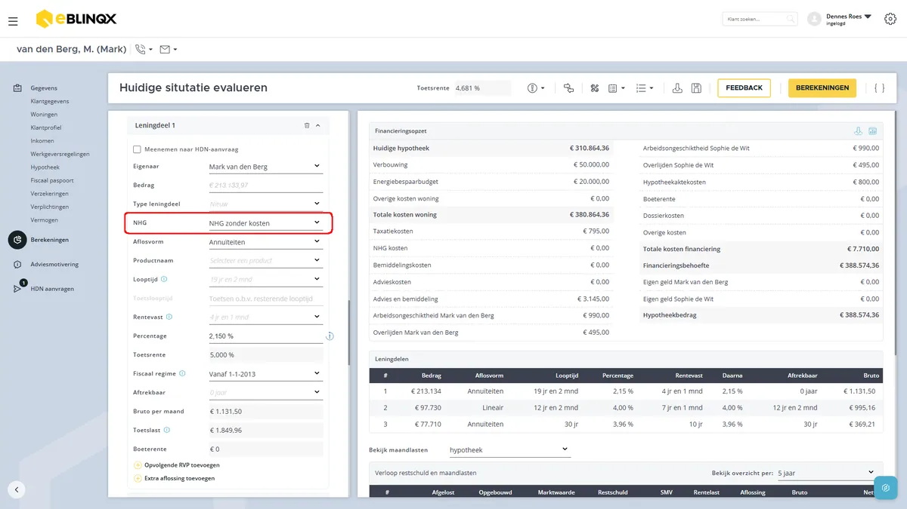
💡 IT-28030: NHG en rente bij bestaande hypotheken nu altijd correct overgenomen
eBlinqx Hypotheekadvies zorgt vanaf nu voor een foutloze overdracht van NHG-instellingen en rentepercentages bij bestaande hypotheken — ook wanneer de klant kiest voor een nieuwe doelstelling, zoals ‘Mijn woning verbouwen’. Zo blijven alle gegevens exact behouden zoals jij ze hebt ingevoerd. Wat is er verbeterd:
-
De NHG-status (Ja/Nee) van bestaande leningdelen wordt voortaan altijd correct overgenomen bij het maken van een nieuwe berekening.
-
Alleen bij de doelstellingen ‘Een bestaande woning kopen’ en ‘Een nieuwbouwwoning kopen’ mag de NHG-instelling opnieuw worden bepaald.
-
De handmatig ingevoerde rente blijft nu ongewijzigd (custom_interest: true) en wordt niet langer overschreven door de databasewaarde.
-
Rentepercentages bij NHG en zonder NHG sluiten weer volledig aan op het vergelijk geldverstrekkers, zodat alles consistent blijft.
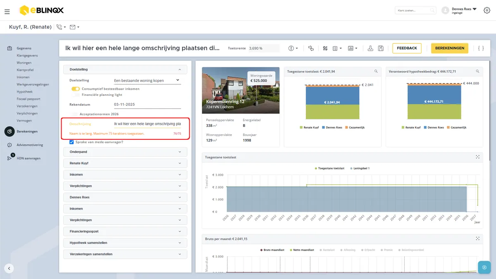
💡 IT-28262: Slimmere invoer bij ‘Omschrijving berekening’ — met live karakterteller en directe limietcontrole
eBlinqx Hypotheekadvies maakt het invoeren van omschrijvingen nu een stuk gebruiksvriendelijker! Bij het veld ‘Omschrijving berekening’ zie je voortaan direct hoeveel karakters je gebruikt — én kun je niet langer per ongeluk te veel tekst invoeren. Zo blijft alles overzichtelijk en foutloos, zonder frustratie of tijdverlies. Wat is er verbeterd:
-
Er is een karakterteller toegevoegd aan het invoerveld (bijv. 54/75 tekens).
-
eBlinqx Hypotheekadvies controleert real-time of de 75-karakterlimiet wordt bereikt.
-
Bij overschrijding verschijnt een duidelijke melding (“Maximaal 75 tekens toegestaan”) — zonder dat je invoer verloren gaat.
-
Je kunt de tekst altijd eenvoudig aanpassen of inkorten, ook na een melding.
Je weet nu precies hoeveel ruimte je nog hebt bij het invoeren van een omschrijving. Geen foutmeldingen meer bij het opslaan, geen tekstverlies — gewoon soepel werken met directe feedback tijdens het typen.
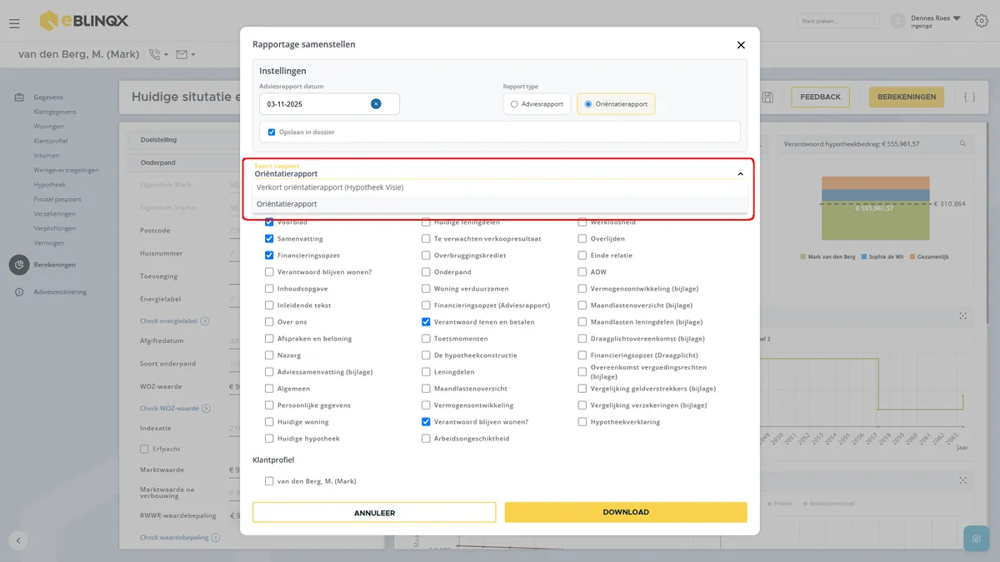
💡 IT-28234: ‘Verkort oriëntatierapport nu op de juiste plek én met verbeterde opmaak
eBlinqx Hypotheekadvies is weer een stukje overzichtelijker geworden! Het ‘Verkort oriëntatierapport' is nu gekoppeld aan het juiste rapporttype: Oriëntatie. Zo vind je het rapport precies daar waar je het verwacht — binnen de oriëntatiefase — en niet langer onder de adviesrapporten. Je vindt het juiste rapport nu direct op de juiste plek, met een frisse, overzichtelijke opmaak. Dat zorgt voor een soepelere workflow en een professioneler ogend document richting je klant.
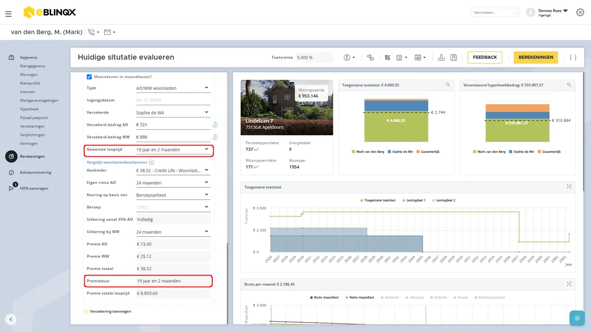
💡 IT-27170: Woonlastenbeschermer rekent en toont de juiste looptijd, premieduur én totale premie
eBlinqx Hypotheekadvies is weer een stukje slimmer geworden! Vanaf nu sluit de berekening van de Woonlastenbeschermer naadloos aan bij de gekozen looptijd en maandpremie. Alle waarden zijn volledig met elkaar in harmonie — helder, betrouwbaar en precies zoals jij het verwacht. Wat is er verbeterd:
-
De premieduur wordt automatisch afgestemd op de verzekeringsduur, zodat beide altijd perfect overeenkomen.
-
De totale premie sluit exact aan bij de maandpremie en het aantal maanden.
-
De weergave in eBlinqx Hypotheekadvies is nu volledig consistent, waardoor je direct inzicht hebt in de correcte duur én kosten van de dekking.
Je kunt klanten nu nog duidelijker laten zien hoe de Woonlastenbeschermer in elkaar zit — met correcte looptijden en een transparante berekening. Zo geef je altijd een helder en professioneel advies.
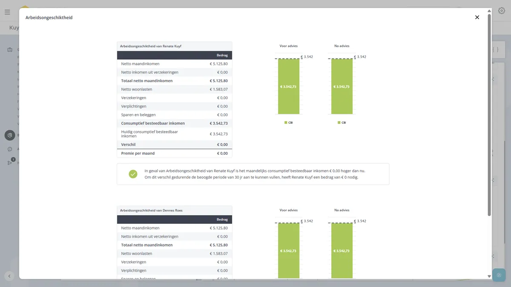
💡 IT-23221: Realistischer inkomens bij life-events
Vanaf nu houdt eBlinqx Hypotheekadvies nóg beter rekening met bestaande inkomens wanneer er een nieuw life-event optreedt. Alleen het inkomen uit loondienst of zelfstandig ondernemerschap verandert bij arbeidsongeschiktheid (AO) of werkloosheid (WW). Alle andere inkomens blijven netjes in stand — precies zoals het hoort. Wat is er verbeterd?
Tot nu toe kon een bestaand inkomen, zoals een ANW- of IVA-uitkering, onterecht worden aangepast zodra er een nieuw life-event plaatsvond. Dat is nu opgelost. eBlinqx Hypotheekadvies kijkt voortaan slimmer naar de aard van het inkomen én naar het type life-event.